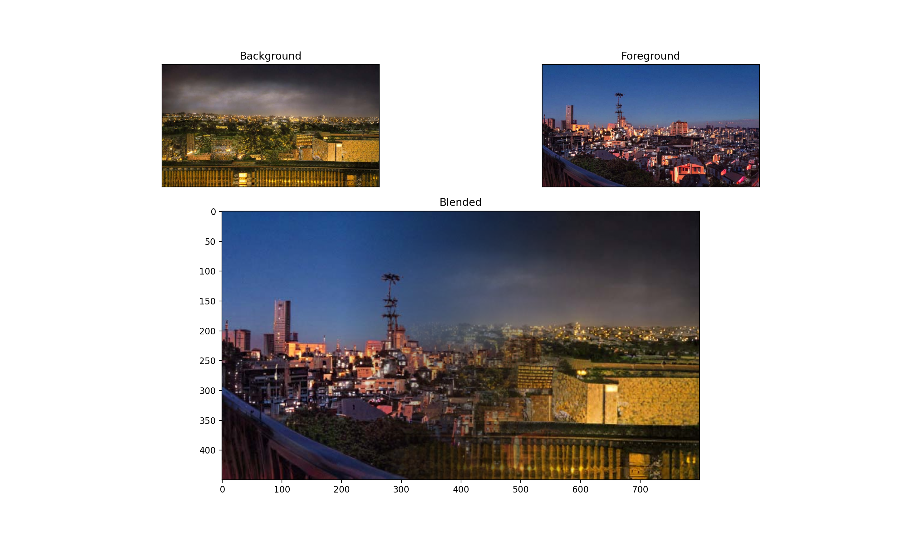
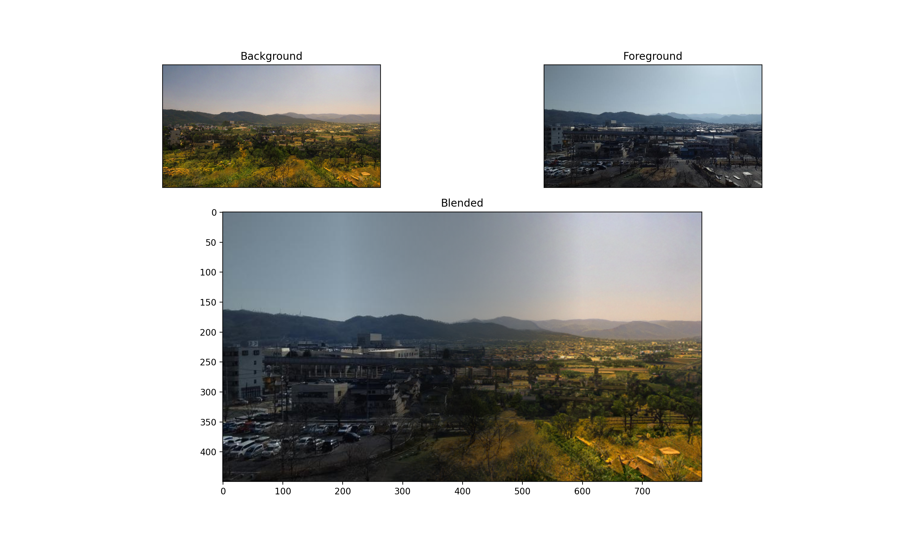

可能性の模索
画像の半分づつを合成するツール
ソースコード
- import numpy as np
- from matplotlib import pyplot as plt
- import matplotlib.gridspec as gridspec
- from mpl_toolkits.mplot3d import Axes3D
- import seaborn as sns
- import cv2
- import random
- # imread(path,-1)でBGRAとして読み込み. ともに(720, 1280, 4)の配列
- #画像の読み込み
- img1 = cv2.cvtColor(cv2.imread('../../../Desktop/pythonimage/みなとみらい公園.jpg',-1),cv2.COLOR_BGRA2RGBA)
- img2 = cv2.cvtColor(cv2.imread('../../../Desktop/pythonimage/伊豆 雪山.jpg',-1),cv2.COLOR_BGRA2RGBA)
- img3 = cv2.cvtColor(cv2.imread('../../../Desktop/pythonimage/伊豆.jpg',-1),cv2.COLOR_BGRA2RGBA)
- img4 = cv2.cvtColor(cv2.imread('../../../Desktop/pythonimage/横浜 荒野.jpg',-1),cv2.COLOR_BGRA2RGBA)
- img5 = cv2.cvtColor(cv2.imread('../../../Desktop/pythonimage/横浜 雪山.jpg',-1),cv2.COLOR_BGRA2RGBA)
- img6 = cv2.cvtColor(cv2.imread('../../../Desktop/pythonimage/横浜 夕焼け.jpg',-1),cv2.COLOR_BGRA2RGBA)
- img7 = cv2.cvtColor(cv2.imread('../../../Desktop/pythonimage/横浜.jpg',-1),cv2.COLOR_BGRA2RGBA)
- img8 = cv2.cvtColor(cv2.imread('../../../Desktop/pythonimage/京都駅 夏.jpg',-1),cv2.COLOR_BGRA2RGBA)
- img9 = cv2.cvtColor(cv2.imread('../../../Desktop/pythonimage/京都駅 秋.jpg',-1),cv2.COLOR_BGRA2RGBA)
- img10 = cv2.cvtColor(cv2.imread('../../../Desktop/pythonimage/京都駅 春.jpg',-1),cv2.COLOR_BGRA2RGBA)
- img11 = cv2.cvtColor(cv2.imread('../../../Desktop/pythonimage/京都駅 冬.jpg',-1),cv2.COLOR_BGRA2RGBA)
- img12 = cv2.cvtColor(cv2.imread('../../../Desktop/pythonimage/京都駅.jpg',-1),cv2.COLOR_BGRA2RGBA)
- img13 = cv2.cvtColor(cv2.imread('../../../Desktop/pythonimage/銀閣 夏.jpg',-1),cv2.COLOR_BGRA2RGBA)
- img14 = cv2.cvtColor(cv2.imread('../../../Desktop/pythonimage/銀閣 秋.jpg',-1),cv2.COLOR_BGRA2RGBA)
- img15 = cv2.cvtColor(cv2.imread('../../../Desktop/pythonimage/銀閣 春.jpg',-1),cv2.COLOR_BGRA2RGBA)
- img16 = cv2.cvtColor(cv2.imread('../../../Desktop/pythonimage/銀閣 冬.jpg',-1),cv2.COLOR_BGRA2RGBA)
- img17 = cv2.cvtColor(cv2.imread('../../../Desktop/pythonimage/銀閣.jpg',-1),cv2.COLOR_BGRA2RGBA)
- img18 = cv2.cvtColor(cv2.imread('../../../Desktop/pythonimage/五重塔.jpg',-1),cv2.COLOR_BGRA2RGBA)
- img19 = cv2.cvtColor(cv2.imread('../../../Desktop/pythonimage/工事現場 氷山.jpg',-1),cv2.COLOR_BGRA2RGBA)
- img20 = cv2.cvtColor(cv2.imread('../../../Desktop/pythonimage/工事現場.jpg',-1),cv2.COLOR_BGRA2RGBA)
- img21 = cv2.cvtColor(cv2.imread('../../../Desktop/pythonimage/竹芝ふ頭 荒野.jpg',-1),cv2.COLOR_BGRA2RGBA)
- img22 = cv2.cvtColor(cv2.imread('../../../Desktop/pythonimage/竹芝ふ頭 草原.jpg',-1),cv2.COLOR_BGRA2RGBA)
- img23 = cv2.cvtColor(cv2.imread('../../../Desktop/pythonimage/竹芝ふ頭.jpg',-1),cv2.COLOR_BGRA2RGBA)
- img24 = cv2.cvtColor(cv2.imread('../../../Desktop/pythonimage/長野 夏.jpg',-1),cv2.COLOR_BGRA2RGBA)
- img25 = cv2.cvtColor(cv2.imread('../../../Desktop/pythonimage/長野 秋.jpg',-1),cv2.COLOR_BGRA2RGBA)
- img26 = cv2.cvtColor(cv2.imread('../../../Desktop/pythonimage/長野 春.jpg',-1),cv2.COLOR_BGRA2RGBA)
- img27 = cv2.cvtColor(cv2.imread('../../../Desktop/pythonimage/長野 冬.jpg',-1),cv2.COLOR_BGRA2RGBA)
- img28 = cv2.cvtColor(cv2.imread('../../../Desktop/pythonimage/長野.jpg',-1),cv2.COLOR_BGRA2RGBA)
- # 画像をランダムで二つ抽出
- list = [img1, img2, img3, img4, img5, img6, img7, img8, img9, img10,img11,img12,img13,img14,img15,img16,img17,img18,img19,
- img20,img21,img22,img23,img24,img25,img26,img27,img28]
- a = random.choice(list)
- b = random.choice(list)
- pdr=a
- sb=b
- # [0,1] に正規化
- pdr = pdr / 255
- sb = sb / 255
- y = pdr.shape[0]
- x = pdr.shape[1]
- # pdrは右から左、sbは左から右で透過のグラデーションをかける
- # pdrを背景, sbを前景にする想定
- pdr[:,:,3] = np.linspace(-0.5,1.5,x).repeat(y).reshape(x,y).T.clip(0,1)
- sb[:,:,3] = np.linspace(1.5,-0.5,x).repeat(y).reshape(x,y).T.clip(0,1)
- # Premultiply(今回は一回だけの合成なのであまり意味がないが)
- for (i,ch) in enumerate(['R','G','B']):
- pdr[:,:,i] = pdr[:,:,i] * pdr[:,:,3]
- sb[:,:,i] = sb[:,:,i] * sb[:,:,3]
- blended = np.zeros(pdr.shape)
- # alphaの式
- blended[:,:,3] = sb[:,:,3] + pdr[:,:,3] * (1 - sb[:,:,3])
- # RGBの式
- for (i,ch) in enumerate(['R','G','B']):
- blended[:,:,i] = sb[:,:,i] + pdr[:,:,i] * (1 - sb[:,:,3])
- gs = gridspec.GridSpec(3,2)
- fig = plt.figure(figsize=(10,9))
- ax1 = fig.add_subplot(gs[0,0])
- ax2 = fig.add_subplot(gs[0,1])
- ax3 = fig.add_subplot(gs[1:3,:])
- ax1.set_xticks([]), ax1.set_yticks([])
- ax2.set_xticks([]), ax2.set_yticks([])
- # アルファは無視して表示
- ax1.set_title('Background')
- ax1.imshow(pdr[:,:,:3])
- ax2.set_title('Foreground')
- ax2.imshow(sb[:,:,:3])
- ax3.set_title('Blended')
- ax3.imshow(blended[:,:,:3])
- plt.show()
プログラム説明
読み込んだ画像ファイルの中からランダムに二つを選び、
半分づつ合成するツール。
最初は画像生成ツールを作ろうとしたが難しかったため、
既存の画像を合成する方向へと変えた。
読み込んでいる画像はフォトショップで編集したため
画像が噛み合うといい感じの画像ができる。

